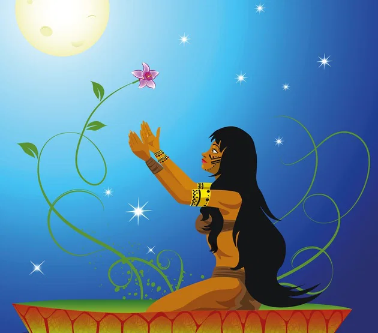

A Iara é uma sereia que faz parte do folclore brasileiro, sendo conhecida por sua grande beleza, voz encantadora e riquezas. Ela é parte mulher e parte peixe e é conhecida por seduzir homens que estão nas margens dos rios, levando-os para debaixo d’água. Um dos principais folcloristas brasileiros afirma que, apesar de a lenda da Iara apresentar características que remetem ao folclore indígena, os principais elementos dessa lenda são europeus e foram introduzidos na cultura popular brasileira pelos portugueses. A consolidação da lenda em sua forma atual ocorreu no século XIX.
voltar para início